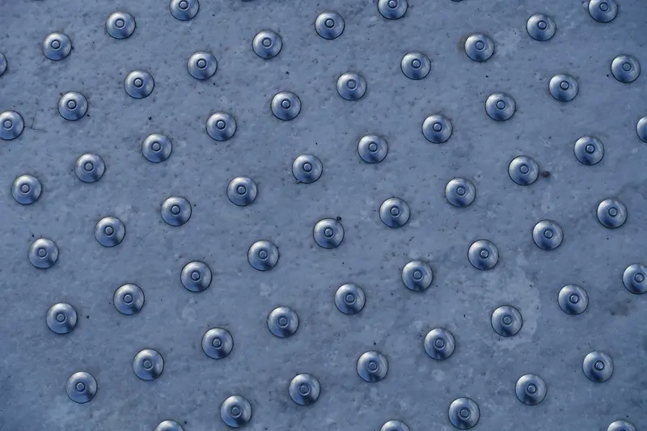

Navegação por teclado
Tudo funciona com Tab, Shift+Tab e Enter, com foco bem visível. O primeiro link de cada página leva direto ao conteúdo principal.
Sustentabilidade só faz sentido se incluir todo mundo. Por isso o portal foi pensado para funcionar com teclado, leitor de tela e zoom.
Nosso compromisso
Nossa meta é atender ao nível AA das Diretrizes de Acessibilidade para Conteúdo Web (WCAG 2.1). Seguimos também a Lei Brasileira de Inclusão (Lei nº 13.146/2015), que no art. 63 garante o acesso de pessoas com deficiência às informações publicadas em sites.
Isso é uma meta em avaliação contínua, não uma certificação. Testamos cada página com teclado, leitor de tela e ferramentas de contraste, e corrigimos o que encontramos.
No topo de cada página, a barra de acessibilidade tem dois botões: "Ouvir a página", que lê o conteúdo em voz alta com a voz do seu navegador, e "Alto contraste", que deixa o site em preto, branco e amarelo. A escolha do contraste fica salva enquanto você navega.
Última revisão: .
O que já fizemos
Medidas presentes em todas as páginas do portal, pensadas para pessoas com deficiência visual, motora, auditiva e cognitiva.
Tudo funciona com Tab, Shift+Tab e Enter, com foco bem visível. O primeiro link de cada página leva direto ao conteúdo principal.
Estrutura com títulos em ordem, regiões bem marcadas e textos alternativos que descrevem cada imagem informativa.
Textos com contraste mínimo de 4,5:1. Nenhuma informação depende só da cor: sempre há texto ou ícone junto.
O texto pode ser ampliado até 200% sem perder conteúdo. Se o seu sistema pede menos movimento, o site desliga as animações.
Vídeo e podcast com transcrição completa e legendas no vídeo. Nenhuma mídia começa a tocar sozinha.
Todo campo tem rótulo visível, os obrigatórios são indicados em texto e os erros aparecem no próprio campo.
Sem mouse
Estas teclas funcionam em qualquer página do portal e na maioria dos navegadores.
| Tecla | O que faz |
|---|---|
| Tab | Vai para o próximo link, botão ou campo |
| Shift + Tab | Volta para o item anterior |
| Enter | Abre o link ou aciona o botão em foco |
| Espaço | Marca caixas de seleção e abre ou fecha as perguntas expansíveis |
| Esc | Fecha o menu no celular e o painel do EcoBot |
| ↑ ↓ | Escolhe opções em listas de seleção e rola a página |
| Ctrl + + / Ctrl + − | Aumenta ou diminui o zoom da página |

Foto: skoddeheimen / PixabayReciclar precisa ser possível para todo mundo. Nos pontos de coleta e nas ações dos projetos, buscamos rampas, piso tátil, horários estendidos e orientação em Libras nos mutirões, quando há intérprete voluntário.
Informações ilustrativas nesta entrega.
Com honestidade
Dúvidas
Não. O portal funciona no navegador e é compatível com os leitores de tela gratuitos, como o NVDA, e com os recursos de acessibilidade do próprio celular.
Use Ctrl + + no computador ou o gesto de pinça no celular. O conteúdo se reorganiza até 200% sem cortar texto.
Cada projeto informa as condições de acessibilidade do local. Se precisar de algum apoio específico, avise pelo formulário de contato antes da ação.
No formulário de contato, escolha o assunto "Relatar barreira de acessibilidade" e descreva o que aconteceu e em qual página.
Conte para a gente pelo formulário de contato, no assunto "Relatar barreira de acessibilidade". Cada relato ajuda a melhorar o portal.